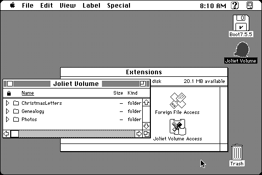

Download
JolietVolumeAccessFree.zip (82K) Joliet Volume Access 1.4.2 repackaged into a zipped hfs disk image and checksum file. The disk image can be mounted with Mini vMac.
JolietVolumeAccessFree.sit.bin (78K) Joliet Volume Access 1.4.2 in the original format.
copyright: Miles Software GmbH & T. Tempelmann
mod date: June 3, 2001
license: Freeware
from url :
Joliet File System by Thomas Tempelmann
Supports the Joliet extension on volumes in ISO 9660 format. That is, supports long file names on CDs designed for Windows (or, in Mini vMac, disk images of them.) For “System 7.1 or later”. (The new shareware version 2 needs System 7.6). I noticed that what I thought was a full install of System 7.5.5 didn’t include the ‘Foreign File Access’ extension. Using the 7.5 installer to install the ‘CD-ROM’ feature of ‘Multimedia Software’ fixed that, allowing Joliet Volume Access to work.

If you find these downloads useful, please consider helping the Gryphel Project, which hosts them.
Here are the md5 checksums for the downloads, signed with Gryphel Key 5:
--------- GRY SIGNED TEXT --------- a940e7799e540b3afec5405b4102afa9 JolietVolumeAccessFree.zip 4ef5f7b974691e84c3fbababe4afaeb5 JolietVolumeAccessFree.sit.bin ------- BEGIN GRY SIGNATURE ------- Gry/4Xa8CFcUzxdN/O70210nyEU6SOH/Dfjn9fCs8bfrAmQ1ZlHtbhu12Iy9vbI2 8XPM9+5PIAZ/ZBGk9f/211M+7rq5+DjEyHDZXzjW5tNgY0VDFV433coyIJocAzBx mwqdu/f5zxvHWy9nKHLld8ptmLaaGNDtxCPyEoHJx692scBKzBTL9vK+zB1kodVg -------- END GRY SIGNATURE --------